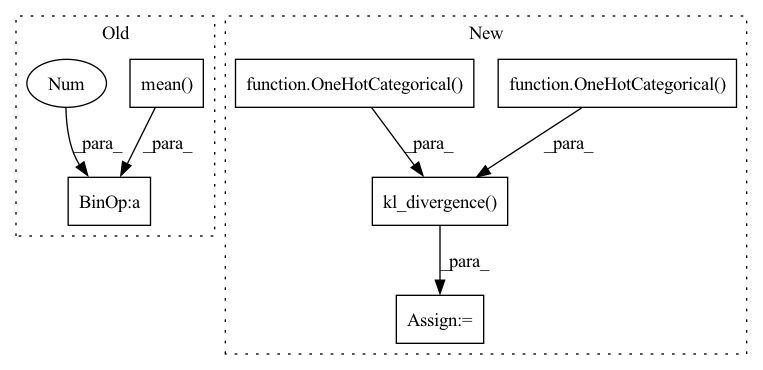

Pattern ID :1870

Before Change
l2QLoss.append(F.mse_loss(latent.detach(), q, reduction="none").mean(axis=(1, 2, 3)))
l1QLoss.append(F.l1_loss(latent.detach(), q, reduction="none").mean(axis=(1, 2, 3)))
l2QLoss.append(0.01 * F.mse_loss(latent, q.detach(), reduction="none").mean(axis=(1, 2, 3)))
l1QLoss.append(0.01 * F.l1_loss(latent, q.detach(), reduction="none").mean(axis=(1, 2, 3)))
// regs.append(-1e-4 * ((latent ** 2).mean((1, 2, 3)) + (q ** 2).mean((1, 2, 3))))
l1QLoss = sum(l1QLoss)
After Change
// N, H, W, K -> N, HW, K
batchWiseLogit = logit.reshape(len(logit), -1, logit.shape[-1])
posterior = OneHotCategorical(logits=batchWiseLogit)
prior = OneHotCategorical(probs=torch.ones_like(batchWiseLogit) / batchWiseLogit.shape[-1])
reg = torch.distributions.kl_divergence(posterior, prior).sum(-1) + compute_penalties(batchWiseLogit, allowed_entropy=0.1, individual_entropy_coeff=1.0, allowed_js=4.0, js_coeff=1.0, cv_coeff=1.0, eps=Consts.Eps)
regs.append(reg)
// reg = reg / diversity
regs = sum(regs)
In pattern: SUPERPATTERN
Frequency: 3
Non-data size: 6
Instances
Fragment ID: 7199849
Project Name: xiaosu-zhu/mcquic
Commit Name: 8c71ec66b33adcc34c3c3769caf2b9087dd03ff1
Time: 2021-03-31
Author: xiaosu.zhu@outlook.com
File Name: src/mcqc/losses/structural.py
M Class Name: CompressionLossTwoStage
N Class Name: CompressionLossTwoStage
M Method Name: forward(6)
N Method Name: forward(6)
M Parent Class: nn.Module
N Parent Class: nn.Module
M File Name: src/mcqc/losses/structural.py
N File Name: src/mcqc/losses/structural.py
M Start Line: 130
M End Line: 151
N Start Line: 146
N End Line: 151
'>
Before Change
for latent, q in zip(latents, quantizeds):
l2QLoss.append(F.mse_loss(latent.detach(), q, reduction="none").mean(axis=(1, 2, 3)))
l1QLoss.append(F.l1_loss(latent.detach(), q, reduction="none").mean(axis=(1, 2, 3)))
l2QLoss.append(0.00001 * F.mse_loss(latent, q.detach(), reduction="none").mean(axis=(1, 2, 3)))
l1QLoss.append(0.00001 * F.l1_loss(latent, q.detach(), reduction="none").mean(axis=(1, 2, 3)))
l1QLoss = sum(l1QLoss)
After Change
// diversity = batchWiseLogit.std(1).mean(-1).sigmoid()
// summedProb = batchWiseLogit.sum(1)
posterior = OneHotCategorical(logits=batchWiseLogit)
prior = OneHotCategorical(probs=torch.ones_like(batchWiseLogit) / batchWiseLogit.shape[-1])
reg = torch.distributions.kl_divergence(posterior, prior).sum(-1)
reg += compute_penalties(batchWiseLogit, allowed_entropy=0.1, individual_entropy_coeff=cv, allowed_js=4.0, js_coeff=cv, cv_coeff=cv, eps=Consts.Eps)
// reg = reg / diversity
regs.append(reg)
regs = sum(regs)
'>
Fragment ID: 7199848
Project Name: xiaosu-zhu/mcquic
Commit Name: 6a7990547d3b9f68e7377cfc03ef1edd64929802
Time: 2021-03-24
Author: xiaosu.zhu@outlook.com
File Name: src/mcqc/losses/structural.py
M Class Name: CompressionLossTwoStage
N Class Name: CompressionLossTwoStage
M Method Name: forward(8)
N Method Name: forward(8)
M Parent Class: nn.Module
N Parent Class: nn.Module
M File Name: src/mcqc/losses/structural.py
N File Name: src/mcqc/losses/structural.py
M Start Line: 53
M End Line: 90
N Start Line: 69
N End Line: 90
'>
Before Change
batchWiseLogit = logit.reshape(len(logit), -1, logit.shape[-1])
// [n, k]
summedProb = batchWiseLogit.mean(1).sigmoid()
target = torch.ones_like(summedProb) / 2.0
// [n, ]
reg = F.binary_cross_entropy(summedProb, target, reduction="none").sum(-1)
// [n, k] -> [n, ]
After Change
diversity = batchWiseLogit.var(1).sum(-1).sigmoid()
summedProb = batchWiseLogit.sum(1)
posterior = OneHotCategorical(logits=summedProb)
prior = OneHotCategorical(probs=torch.ones_like(summedProb) / summedProb.shape[-1])
reg = torch.distributions.kl_divergence(posterior, prior) / diversity
// reg += compute_penalties(unNormlogit, allowed_entropy=0.1, individual_entropy_coeff=cv, allowed_js=4.0, js_coeff=cv, cv_coeff=cv, eps=Consts.Eps)
regs.append(reg)
regs = sum(regs)
'>
Fragment ID: 7199844
Project Name: xiaosu-zhu/mcquic
Commit Name: a70c627dfb797c38494d697f152f70f80bea53e3
Time: 2021-03-21
Author: xiaosu.zhu@outlook.com
File Name: src/mcqc/losses/structural.py
M Class Name: CompressionLossTwoStage
N Class Name: CompressionLossTwoStage
M Method Name: forward(8)
N Method Name: forward(8)
M Parent Class: nn.Module
N Parent Class: nn.Module
M File Name: src/mcqc/losses/structural.py
N File Name: src/mcqc/losses/structural.py
M Start Line: 49
M End Line: 86
N Start Line: 49
N End Line: 93